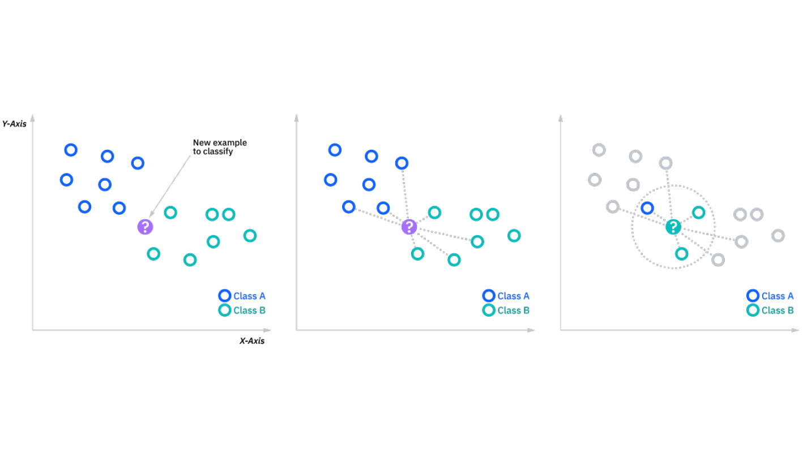
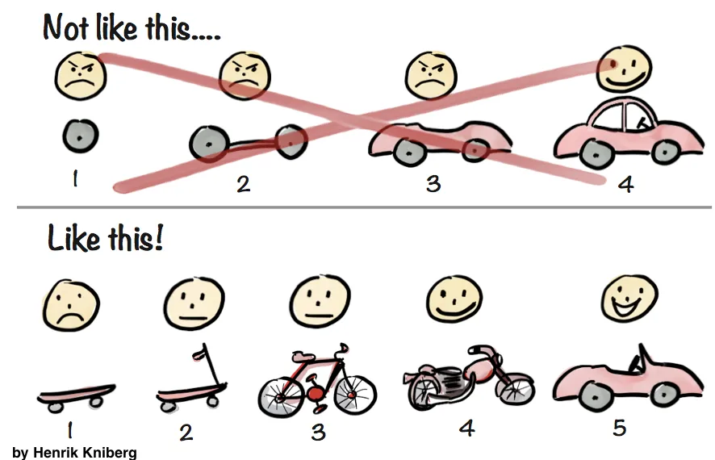

Recomendador de música:
Contexto
La música es una expresión armónica de sonidos que nos generan sensaciones .... básicamente nos gusta esuchar música. En la antigüedad (principios de los 2000, omita hacer comentarios al profesor para que el mismo no tenga un mental break down), la gente solía recomendar canciones por el boca a boca, teniendo que comprar el formato físico para poder escuchar dicha música.
Si te gustó este albúm, comprá "X" que seguro te gusta
Hoy en día la frase que nos indica la plataforma de streaming que deseen utilizar es un poco diferente:
Porque te gustaron "A", "B" y "C", te recomendamos "Z"
Esto se debe a que con la tecnología, los sistemas de recomendación crecieron en utilidad masivamente. Siendo hoy en día una de las principales features de ciertos productos y los drivers de gran cantidad de ganancias. Piensen en:
- Mercado libre => Productos que te puedan gustar, es uno de los mayores hooks de la plataforma.
- Spotify => Only for you, las recomendaciones weekly son su principal forma de exponer usuarios a nuevos gustos.
- Netflix => En 2017 el 70% de su revenue provino de las recomendaciones que generaron a sus usuarios.
Entonces, porque no intentamos hacer nuestras propias recomendaciones? ....
Objetivo
El objetivo de este proyecto es comenzar a entender como podemos dar recomendaciones utilizando datos y software para
el proceso.
Utilizaremos un modelo de inteligencia artificial  para predecir canciones que puedan ser de interés para el usuario;
el mismo deberá indicar algunas canciones que hoy en día le gusten y determinaremos 5 canciones nuevas para escuchar.
para predecir canciones que puedan ser de interés para el usuario;
el mismo deberá indicar algunas canciones que hoy en día le gusten y determinaremos 5 canciones nuevas para escuchar.
Nuestro programa tendrá una interfaz por consola  donde pediremos los datos inciales y luego daremos nuestra
recomendación.
donde pediremos los datos inciales y luego daremos nuestra
recomendación.
Note
Las recomendaciones que generaremos en este proyecto no serán excelentes y hay mucho para mejorar, pero es una primera aproximación al concepto de recomendaciones.
Como vamos a recomendar canciones ....
El modelo: KNN
Para las recomendaciones nos basaremos en un modelo tradicional de Machine Learning llamado KNN (K Nearest Neighbours). El modelo es muy simple, para entenderlo primero debemos revisar cual es el problema que resuelve:
problema
Si tenemos un conjunto de puntos que pertencen a distintas clases (entiendan clase como la asignación de algún tipo de etiqueta) y aparece un nuevo elemento el cual desconocemos su clase, pero queremos asignarle alguna de las que ya existen. Este es el problema que intenta resolver el algortimo de KNN.
El approach que toma dicho algoritmo es el siguiente:
- Dado el nuevo punto (piensen en los puntos como coordenadas en un mapa), tomo los K (por eso la "K" en el nombre) puntos más cercanos (estos son los vecinos ... por eso el "NN" del nombre).
- Luego cuento cuanta cantidad de esos "vecinos" pertenecen a cada clase.
- Determino que la clase del nuevo punto es la clase que más veces aparezca entre sus vecinos.

Notese que el método definido aquí es la implementación más básica y hay muchas optimizaciones posibles.
Note
El K en el algoritmo es un parámetro, significa que a la hora de correr el algoritmo debemos especificar que valor queremos que tome K.
- Mientras más grande k más específico tiende a ser el resultado.
- Mientras menos k tomemeos, tiende a ser más rápido.
De donde sacamos las canciones:
El dataset que utilizaremos provine de la plataforma Kaggle, donde la empresa Spotify publicó una competencia para ver quien era capaz de generar un modelo de recomendaciones mejor que el que tenían. Esta es una practica conocida por empresa y si les interesa busquen la historia de Netflix: 1 Million prize. El dataset contiene al rededor de 100 mil canciones, de las cuales nos otrogan los siguientes datos:
-
duration_ms: duración de la canción en milisegundos.
-
key: The estimated overall key of the track. Integers map to pitches using standard Pitch Class notation . E.g. 0 = C, 1 = C♯/ D♭, 2 = D, and so on. If no key was detected, the value is -1.
-
mode: indica la modalidad (major o minor) de la canción. Es la escala melódica en la que se deriva la canción. y esta representado por 1 (major) y 0 (minor).
-
time_signature: Es la firma temporal de la canción. Es una notación formdada por una conveción para aclarar cuantos beats se muestran por cada medición de la canción.
-
acousticness: una medida de confianza entre 0.0 y 1.0 de si la canción es acustica o no.
-
danceability: Es una medida entre 0.0 y 1.0 que describe que tan buena es al canción para bailar en base a varios factores, como el ritmo, los decibeles, la regularidad, etc.
-
energy: Es una medida de 0.0 a 1.0 que representa que tan rápida, ruidosa y fuerte es la canción. Death metal tiene un valor alto mientras que Blues usualemnte un valor bajo.
-
instrumentalness: Valor entre 0.0 y 1.0 que determina la confianza de que la canción sea instrumental pura o tenga partes de canto.
-
liveness: Valor entre 0.0 y 1.0 para detectar la precencia de audiencia en la canción. Valores superiores a 0.8 son considerados live performance.
-
loudness: El valor promedio de decibeles de la canción. (entre -60 y 0)
-
speechiness: valor de confianza entre 0.0 y 1.0 de que el audio de la canción sea puramente voz.
-
valence: valor entre 0.0 y 1.0 que describe la positividad de la canción (canciones felices, alegres, etc).
-
tempo: El tempo promedio de la canción descrito en BPM (beats per minute). Vea el siguiente link para entender
-
id: Spotify ID.
-
popularity: La popularidad se mide de 0 a 100, canciones que fueron recientemente muy escuchadas tienden a tener un valor más alto.
Como voy a utilizar esto para recomendar:
A este punto entendemos el funcionamiento básico de KNN pero surge la pregunta .... como esta asignación de "clases" se relaciona con mi objetivo de recomendar canciones a alguien.

Por ahora entendemos que KNN necesita "puntos" que tengan algún tipo de etiqueta y que lo único que hace es etiquetar un nuevo punto en base a los anteriores. Pero el algoritmo funciona sobre coordenadas en un plano, vectores matemáticos y nosotros tenemos canciones que lejos estan de ser vectores... o tal vez no.
Ahora, si me acompañanan en el siguiente viaje astral por una analogía .... Que pasa si tomamos una canción y la transformamos en una serie de características como por ejemplo:
- el tempo
- el año
- el género
- el pitch
- el nombre de la banda que la interpreta
- sucesivas características...
De esta forma podríamos representar una canción como un vector, donde cada columna representa el valor de cada una de estas características. Donde asumimos que cada columna representa una dimensión distinta, una dimensión en la logitud de la canción, otra dimensión es la banda, otra es el género, otra es el año.
Entonces podemos pensar que la comparación entre dos canciones pasaría de ser:
Canción "A", escrita por banda X en el año 1990, del género tanto
puede llegar a parecerse a esta otra canción "B" de la banda Z en el año 2010 de género tanto.
ahora sería algo como:
[1, 1990, 13, 3.12]
[45, 2010, 5 , 2.6]
donde el primer valor representa el pitch, el segundo el año de lanzamiento, el tercero el tempo y el ultimo la duración en minutos. Veamos como ahora pasamos de tener un problema cotidiano en una definición matemática.
Ahora, si hacemos esto para todas las canciones que queramos, pasaríamos a tener .... un montón de puntos en un mapa. Dado que aprendimos en Algebra [ Fear of Juan intesifies ] que podemos tomar la distancia entre 2 vectores. La forma más tradicional sería utilizando la distancia euclidea.
Enotnces, si frenamos un segundo en nuestro viaje astral nos podemos dar cuenta que pasamos de tener un montón de canciones a un montón de puntos en un plano matemático a los cuales puedo tomarle disntacias para encontrar los "vecinos". Es decir, que ya estamos muy cerca de poder lograr aplicar KNN, pero ahora nos falta dar una "etiqueta" a cada canción. Aunque seguimos con el problema de que no tenemos etiquetas para utilizar ...
Que pasa si usamos como etiqueta de cada canción:
- "le gusta al usuario"
- "no le gusta al usuario" ....

Ahora ... como sabemos que canciones le gusta al usuario y cuales no? bueno, este es el arte (lease mágia oscura) que hacen las empresas para solucionar el denominado problema: cold start.
En nuestro caso, simplemente le vamos a pedir al usuario que nos indique N cantidad de canciones que le gustaron o no. Otra forma es pedir al usuario que nos indique canciones que le gustan y tomar un random de canciones que vamos a considerar como que no le gustan, esta técnica es útil cuando tu dataset es tan grande que la probabilidad de que tomes un punto que pertenezca al conjunto de "no interés" es alta.
Para resumir nuestro viaje astral:
Vamos a tomar canciones y según características numéricas que tengan como son, el año de lanzamiento, la duración de la canción, el pitch, entre otras obtendremos un vector numérico que represente a cada canción. Luego, con ayuda del usuario tomaremos un par de canciones (vectores) y les pondremos la etiqueta de "le gustan al usuario". Acto seguido, tomaremos una muestra al azar de canciones no seleccionadas y diremos que estas "no le gustan la usuario". Esto es una heurística simple que tomamos, podríamos tomar otras alternativas para conseguir etiquetas ciertas canciones como "no le gustan".
Finalmente, utilizaremos KNN para "predecir" la etitqueta (le gusta o no le gusta) de las canciones que no están etiquetadas.
Estrategia:
Ahora que tenemos una idea de hacia donde vamos y que herramientas vamos a utilizar, debemos plantearnos como vamos a encarar este desarrollo.
Separation of concerns:
Lo primero que hacemos es entender la separación de "dominios" que tiene la app. En este caso, entendemos que nuestro desarrollo tiene las siguientes capas
Notice
Un Capas se refiere a el set de herramientas pertinentes a un area de nuestro problema el cual puede quedar separado del resto de nuestro problema. Por ejemplo: - el modelo predictor que utilicemos - el conjunto de modulos o funciones que utilizaremos para interactuar con el usuario - el conjunto de modulos o funciones que utilizaremos para obtener los datos
Una vez que tenemos estos conceptos claros, por el siguiente paso.
MVP y KISS:
Cuando hacemos un desarrollo pensamos en la mínima implementación de funcionalidades que logran nuestro objetivos. En este caso la minima funcionalidad que queremos es:
- Dado un conjunto presetteado de canciones que tomaremos como (canciones que gustan al usuario)
- Generar un conjunto de 3 canciones a recomendar.
- Medir la calidad de nuestras recomendaciones.
En la industria, MVP se refiere al producto minimo viable (MVP por sus siglas en ingles). Para nuestro caso, esto se traduce en las 3 funcionalidades mencionadas.
Para generar este desarrollo intentaremos mantener la implementación lo más sencilla posible y en base a un modelo funcional iremos modificando la solución para hacerla mejor. Esto es el principio de KISS (Keep It Simpel ... Stupid).

Iteraciones rápidas:
En el desarrollo de software hay que intentar acortar el loop de desarrollo, que comprende el ciclo desde crear una funcionalidad y obtener el feedback del usuario.
En este caso, nuestro desarrollo se basa en generar código, testear que puedo levantar datos, que puedo tomar información del usuario y que nuestro modelo efectivamente funciona y entrega buenos resultados.
Desarrollo:
El desarrollo de este sistema queda enteramente abierto a gusto del lector, en la siguiente sección simplemente iremos viendo un posible esquema de trabajo el cual plantea obtener el mayor apredizaje del ejercicio.
Iteración 1
En la primera versión de nuestro sistema de recomendación tendremos un programa que dado un input explicito (hardcoded) que representa las canciones que le gustan al usuario. Devolveremos una recomendación, dicha recomendación será simplemente una selección random de canciones. El esquema al finalizar esta etapa será:
- Al correr el programa no debemos ingresar datos.
- En pantalla nos aparecen las canciones preseleccionadas como que "le gustan al usuario"
- Nos aparecen las 5 recomendaciones de canciones.
- El programa imprime un score de que tan buena es la recomendación. (vean la siguiente sección)
Note
El modelo básico que devuelve una selección random es muy importante, dado que nos deja entender como interactuar con el modelo de recomendación dentro de nuestra solución. Entiendan en que parte del programa vamos a utilizar este algoritmo y su rol en el mismo.
Como testear que un modelo funciona:
Uno de los problemas emergentes por la naturaleza de nuestro proyecto es ... saber como determinar si realmente estamos dando una buena recomendación. Esto es un problema recurrente de Machine Learning y es algo que extensamente verán en materias posteriores, por lo que para nuestro caso de uso haremos una heurística simple.
Para dar un score a nuestra recomendación debemos plantear: que consideramos bueno en una recomendación.
Para nuestro ejemplo simple, podemos tomar que una recomendación es buena si la energía (energy) de la recomendación son parecidas al promedio de las canciones que el usuario seleccionó como "que le gustan". Dado que usualmente las personas tieneden a buscar un cierto tipo de música en particular, este sería un buen primer approach. Notese que esta heurística puede tornarse tan complicada como queramos.
Finalemente deberiamos tener una especi de función que tenga al siguiente firma:
def is_good_recom(song, parametros extra que deseemos) -> bool:
...
En este caso song será el vector que represente la canción que recomienda el modelo y simplemente devolverá
el valor True si cumple con nuestro criterio de "recomendación buena" y False caso contrario.
Finalmente el score de la recomendación completa (las 5 canciones) será simplemnte la cantidad de aciertos (True)
sobre la cantidad de canciones recomendadas (5/5 es la máxima y 0/5 es la mínima).
Iteración 2:
En esta etapa nos centraremos en permitirle al usuario seleccionar canciones, es decir que queremos eliminar la partde hard coded y dejarle al usuario ingresar el nombre de la canción que desea.
Al finalizar esta etapa tendremos:
- El usuario ingres el nombre exacto de una canción dentro de nuestra lista de canciones.
- El usuario repite el paso previo 5 veces
- El programa retorna una lista de 5 recomendaciones.
- obtenemos el score de nuestras recomendaciones.
Nuevamente, utilziaremos el modelo de seleción al azar de canciones. Porque todavía no nos aporta valor, si el usuario es incapaz de interactuar con el sistema para ingresar que canciones le gusta... no importa que tan bueno sea nuestro modelo el usuario nunca lo podrá usar. Es como construir un motor Formula 1 cuando todavía no tenés ni un chasis donde montarlo.
Concentrarse en permitir seleccionar las canciones de la lista de canciones, puntos extra si podemos seleccionar sin importar si ingresamos mayúsculas o no.
Iteración 3:
En esta iteración ahora si veremos de implementar una versión básica del algoritmo KNN para nuestro problema. Una versión de prueba se encuentra disponible en el repositorio de tutorial, bajo la sección "proyectos/recomendador".
Al finalizar esta etapa tendremos:
- El usuario ingres el nombre exacto de una canción dentro de nuestra lista de canciones.
- El usuario repite el paso previo 5 veces
- El programa retorna una lista de 5 recomendaciones.
- obtenemos el score de nuestras recomendaciones.
En esta etapa debemos ver mejoras en nuestro score final, de no ser así modificar el K hasta lograr mejoras con respecto a valores previos.
Iteración 4:
A esta altura tenemos un programa funciona, ahora podemos focalizarnos en hacerlo más fácil de utilizar con mejoras como:
- Permitir al usuario ingresar parte del nombre de la canción y mostrarle posbles nombres y dejarlo seleccionar el que quiera.
- Mejorar nuestra impelmentación de KNN utilizando un K más alto o teniendo encuenta la "nota al final de la sección".
- hacer más eficiente el algoritmo de búsqued de KNN que tenemos implementado en al versión básica.
- Muchas más.
Note
El KNN que vimos hasta ahora no tiene en cuenta la distancia entre el punto que estamos analizando y los "vecinos" que encontramos. Si tomamos 5 vecinos para determinar cual es la clase de un punto pero de los 5, 3 estan muy lejos del punto y 2 está casi pegados las chances son que la clase correcta sea la de los 2 puntos más próximos aunque en nuestra versión diremos que la clase sea la de los 3 puntos más lejanos (asumiendo que los 3 puntos lejanos son de la misma clase y los 2 puntos cercanos son de otra clase distinta).
Happy Coding!